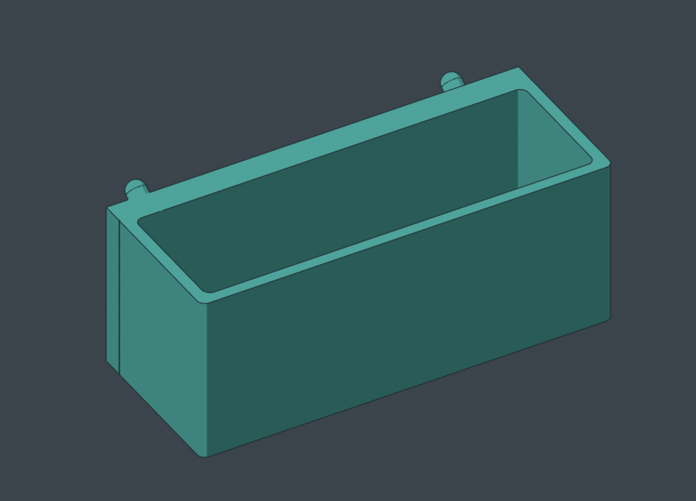
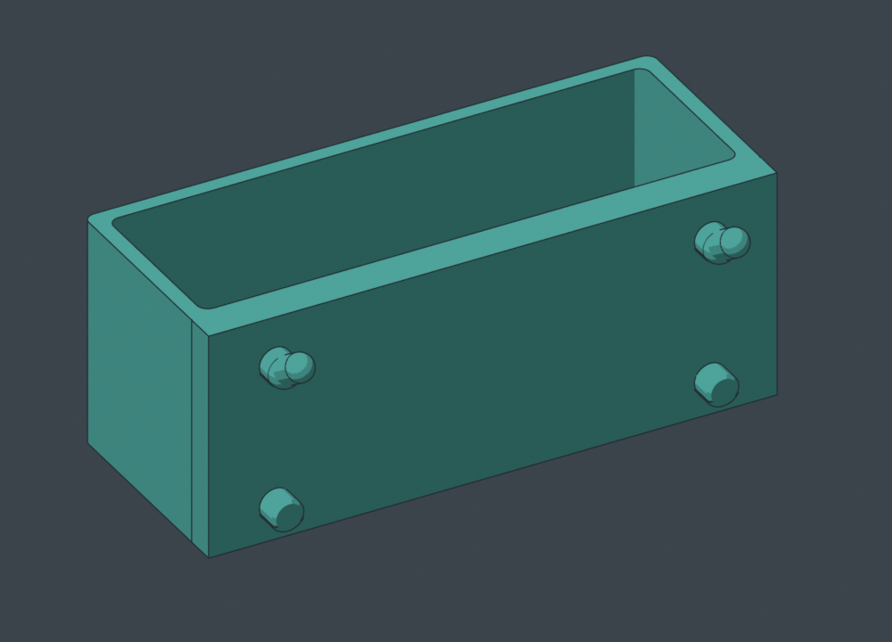
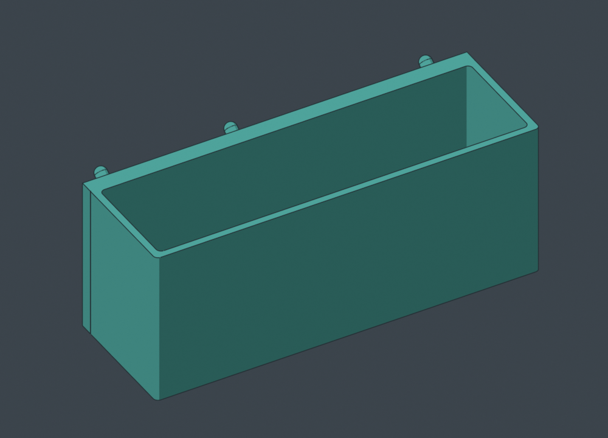
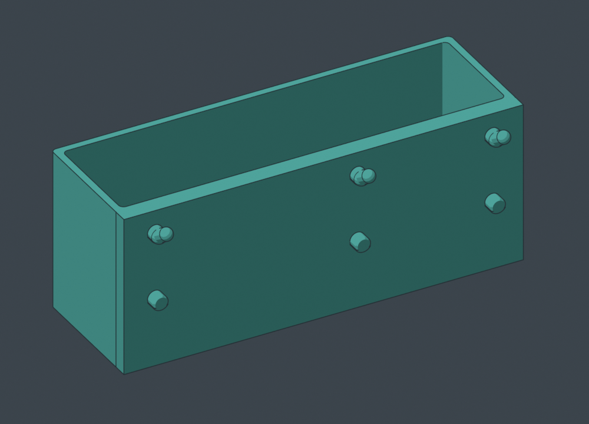
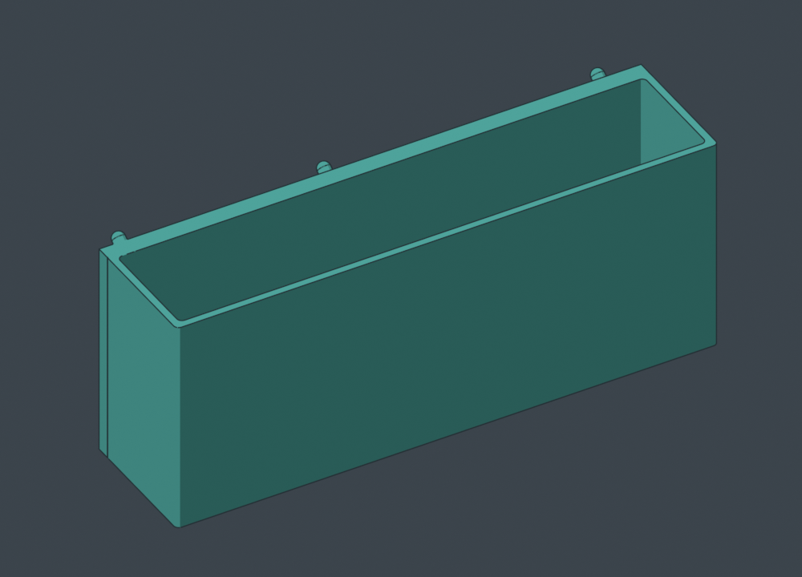
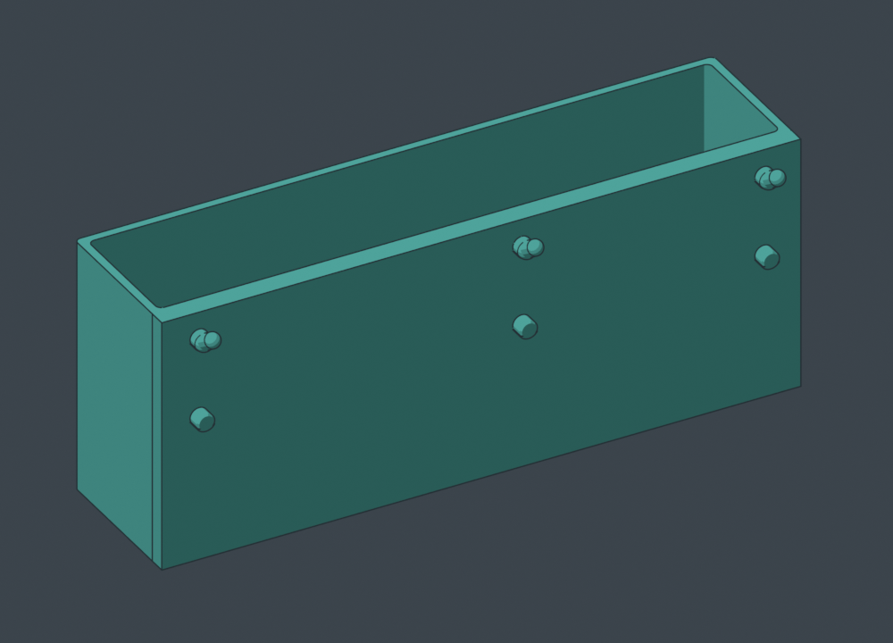
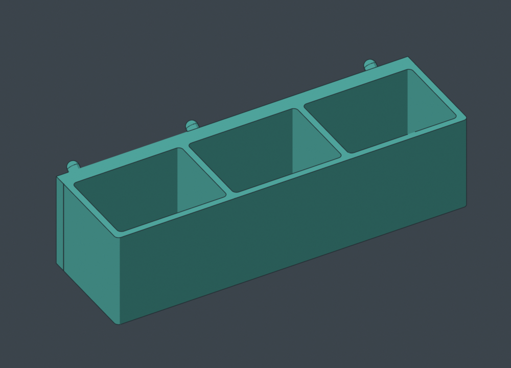
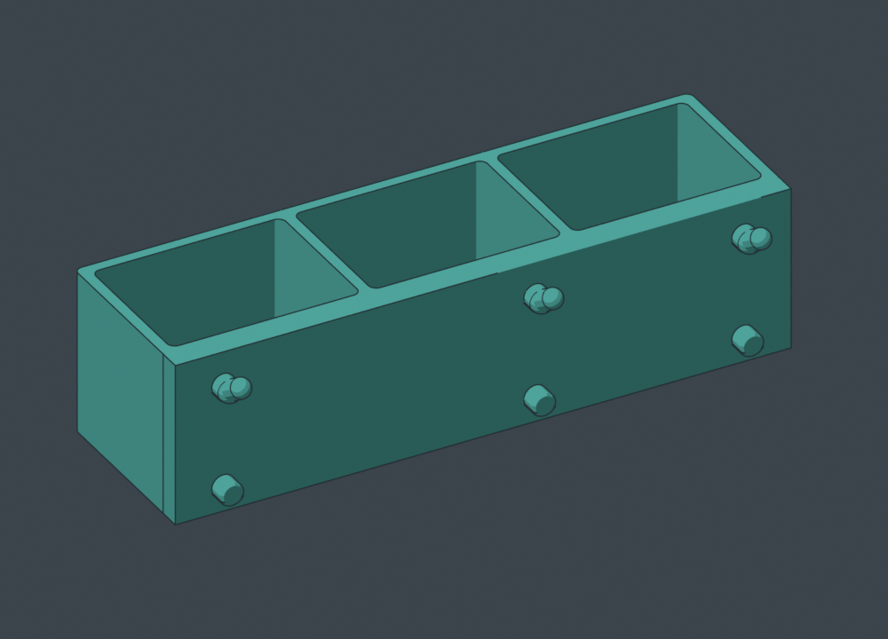

PEGSTR EXPANSION PACK · FLAT-BOTTOM BINS · FORM REVIEW
Wide on the board.
Flat on the bed.
Four closed-bottom options, using the original Pegstr pocket generator and our current canonical tighter pegs. Bin widths follow the 25.4 mm grid, with 1 mm inset at each end. The receiving back stays flush against the board.
Print face selected: upright on the whole flat base. Straight walls rise from the bed; there is no curved rising underside. Rear hooks and locators may still need local supports. These candidates have closed-mesh, grid and floor checks, but have not been sliced or physically tested.
Where these come from
The original examples are P06 / PegBoard_box_100x60.stl and P07 / PegBoard_box_60x40.stl. In PegBoard.scad, closed_bottom sets floor closure as a multiple of wall thickness. The opening size, pocket counts, height and taper_ratio control the bin. These variants use holder(0) - holder(1) for the original pocket/floor shape, then unite it with the flush back and custom pegs.
Original Pegstr — Pegboard Wizard by Marius Gheorghescu / mgx · Original source · CC Attribution–NonCommercial; source bundles preserve attribution and describe our changes.

PB01 · 4 grid cells · 1 pocketCompact utility bin
99.6 × 40 × 40 mm
Width along board × height × projection
2 peg columns · 3.2 mm floor · 2.8 mm walls
Rear mounts and rotate in 3D

Geometry and floor checks

PB02 · 6 grid cells · 1 pocketWide utility bin
150.4 × 60 × 50 mm
Width along board × height × projection
3 peg columns · 3.2 mm floor · 2.8 mm walls
Rear mounts and rotate in 3D

Geometry and floor checks

PB03 · 8 grid cells · 1 pocketLarge utility bin
201.2 × 80 × 50 mm
Width along board × height × projection
3 peg columns · 3.2 mm floor · 2.8 mm walls
Rear mounts and rotate in 3D

Geometry and floor checks

PB04 · 6 grid cells · 3 pocketsThree-pocket parts bin
150.4 × 40 × 45 mm
Width along board × height × projection
3 peg columns · 3.2 mm floor · 2.8 mm walls
Rear mounts and rotate in 3D

Geometry and floor checks
Each source ZIP embeds this revision of the peg fit. Local repository generators reread the canonical file on every render; portable copies do not update automatically.